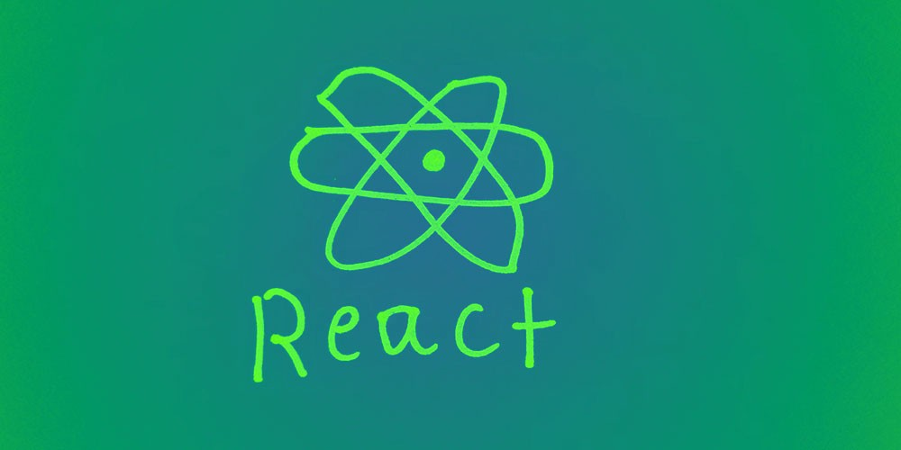
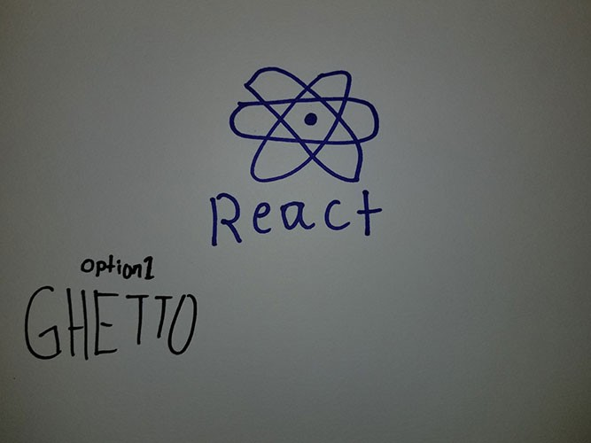
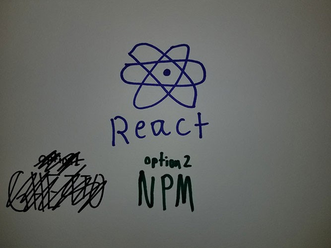
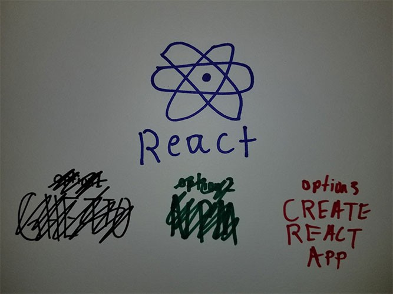

Lets set the scene. You are starting on your new path called web developer and you know HTML and CSS. You have heard of this thing called React that every developer and their mother is using. But what is it and how do you start using it today?

React is a Javascript user interface framework. Its become the most popular out of all the other JS UI frameworks because of its great performance, ease of use, and its ability to handle data. It also makes you a better Javascript developer because it forces you to write JavaScript code, not its own proprietary mumbo jumbo like reactDoMagic.
There are a couple of ways to start using react in your web app which I will show you and you can pick whatever tickles your fancy.
Option 1: The ghetto way

I like to call things that are done quick and dirty ghetto and thats exactly what we will do now to start. Paste this script tags before the body tag of your any html page.
<script src=”https://unpkg.com/react@15/dist/react.min.js"></script> <script src=”https://unpkg.com/react-dom@15/dist/react-dom.min.js"></script>Told you it was the ghetto way! This is obviously not the best way to use react in your web app but if you want to start goofing around the react library there is no quicker, and dirtier 🤐, way.
Option 2: Use NPM

If you are ready to get serious about adding react to a web project use NPM and require it as a dependency. There is a lot more that goes into getting react into your project then just requiring it a dependency using NPM so I created a github repo that includes everything you need to get this show going.
Once you have cloned that repo to your computer
git clone git@github.com:a0r1an/React-Starter-Template.gitUsing your terminal,
type npm installAfter all modules have finished installing you can simply type npm run start This will get a local server up and running with your new web app. The repo uses webpack to bundle up all your modules, and then shoots bundled code through babel which does some compiling to get your code to work in the browsers you need it to. We are looking at you Internet Explorer!
Option 3: Create React App

Lets do a little history lesson! In the beginning we had HTML, CSS, and Flash. Then JavaScript became big. The bigger it got the more complex web development got. Developers complained about JS fatigue and how much it is to even get a project up and running. This same predicament holds true with react. Like I said before it takes a lot of setup before you can actually start seeing the benefits of using a library like react. You need Node.js, NPM, a module bundler like webpack. Not to mention other libraries you need to make your web app. Luckily, the web developer community can do greate things and some developers came together and decided to create a tool that makes developing react apps easy and less time consuming. Thus we have Create react app.
https://github.com/facebookincubator/create-react-app
It has support from the creators of react and its a much more robust starter template than my rinky dink starter template. The setup process for it similar to my project. Run the following commands in your terminal.
npm install -g create-react-app
create-react-app my-app
cd my-app/
npm startCreate a directory called components inside the app directory. Now create a file within the components directory called Header.js In this file will create the basic structure of a component.
Now within your index.js you need to pull in that component by requiring it and adding the component in your markup.
You can use Header.js as a template to create as many components as you want to. Just require and call them in the index.js file and they will appear.
React is great for handling information and the app I just made, if I can call it that, doesn’t really utilize react for any other reason but to render the components to the DOM.
Hopefully this wets your appetite enough to get you started with react. I continue to make more tutorials like this and more react tutorials too. Thanks for reading. Peace out 🖖🏼